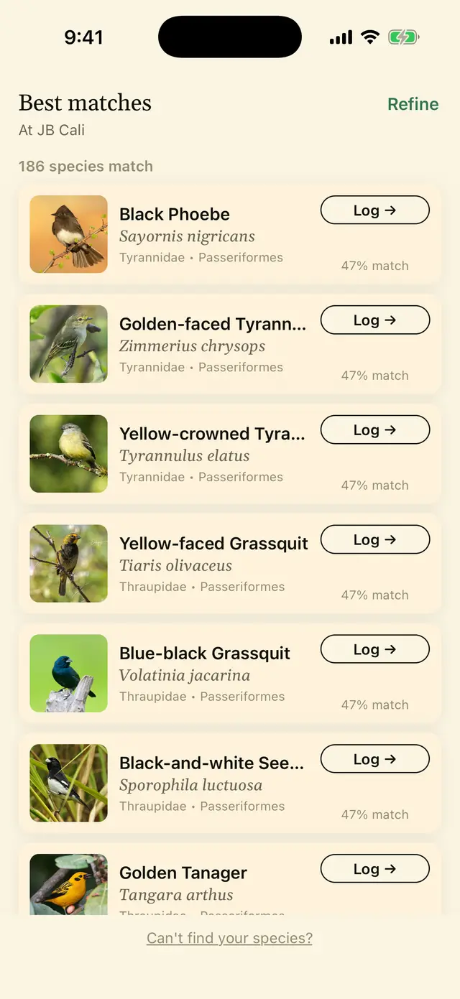
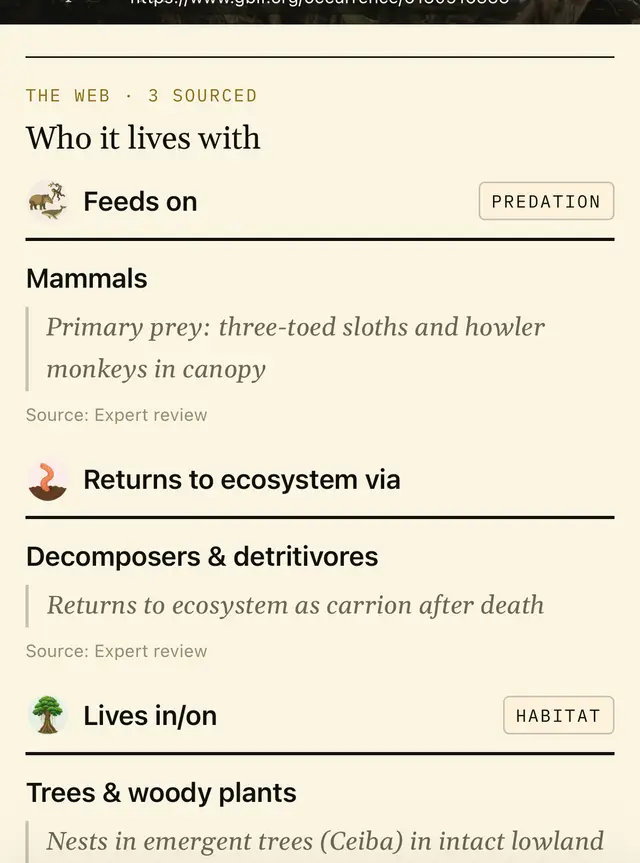
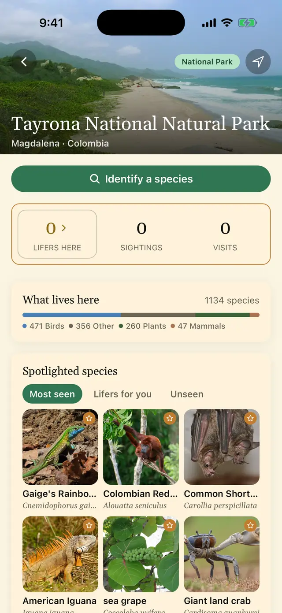
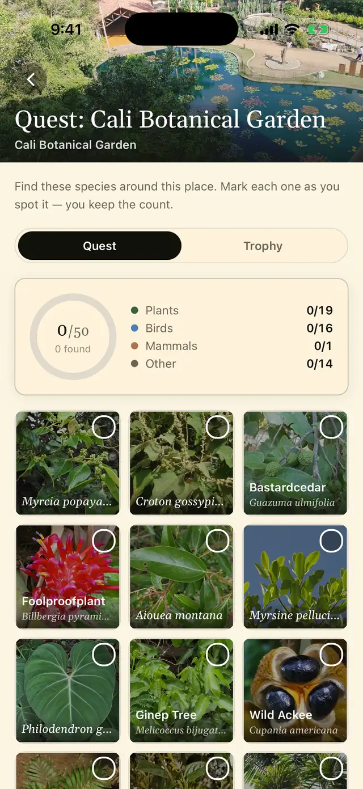
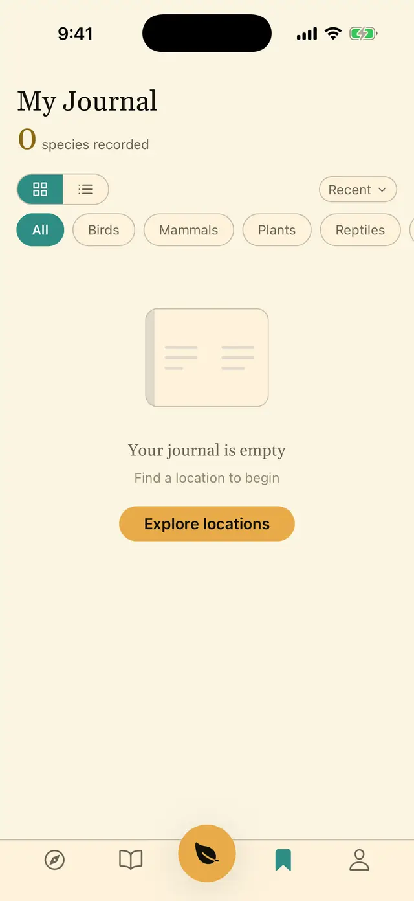
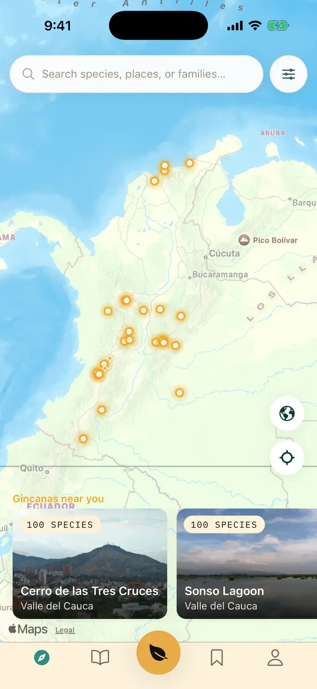

Identify what's around you. Complete the place's gincana. Understand how it lives.
Tawari is a living field guide to Colombia's biodiversity. A few questions — size, colour, where it was — take you to the species actually recorded at the place you're standing. And the card doesn't stop at the name: what it eats, who eats it, where it lives and, when there is a source to cite, what it means to the people here.
9,493 species · 25 places · 3 gincanas · 3,535 written cards
Counted in the database on 17 September 2026.

What's inside, counted
Numbers you can check.
No figure on this page is rounded or estimated. Each one came from a query against the database on 17 September 2026, and they change with every release.
A "written" card went through full drafting and a review. A "draft" card says how little is known and doesn't invent the rest — you'll see one further down.
How it works
From "what is this?" to "this is how it lives".
A few questions, in order.
First: fauna, flora or fungi? If it's an animal, what kind? For a bird it's five steps: what kind of animal it is, how big it is, what its main colours are (up to four, the most striking first), and where you saw it. Any step can be skipped.
What narrows the list is the place and the kind of animal: only species recorded where you are get in. Your other answers rule nobody out — they order that list, putting the best fits on top. So a similar species doesn't vanish because you misremembered a colour.

The ones that match, and why.
The list shows each candidate with photo, common and scientific name, family and order, and how well it fits what you answered. In the capture: a small yellow-and-black bird seen in the canopy at the Cali Botanical Garden. The 186 in the list are every bird recorded at that garden, ordered by fit — flycatchers, tyrannulets, seedeaters and tanagers at the top. If none convinces you, you can log the sighting unidentified, with the closest one and a note, and come back to it later.

How to recognise it, what it eats, where it lives.
- Identification: each field mark as a short title with one line explaining it. For the harpy eagle: "double grey crest", "talons larger than a hand".
- Who it lives with: feeds on…, returns to ecosystem via…, lives in/on…, each naming the group it points to and where the claim came from.
- Ecosystem role, distribution, taxonomy and IUCN Red List status where an assessment exists.
- Data and photo sources on every card. Every photo carries its author and licence; we use only openly licensed images (CC0, CC BY, CC BY-SA).

What lives here, according to the records.
Twenty-five published places, from Tayrona National Natural Park to Puracé, from the Ciénaga Grande de Santa Marta to the botanical gardens of Bogotá, Medellín and Cali. Each place guide lists the species recorded there by real observations, not by what "should" be there.
At Tayrona, "What lives here" counts 1,134 species: 471 birds, 260 plants, 47 mammals and 356 from other groups — insects, reptiles, fungi, amphibians, spiders. Every guide opens with "Identify a species" and highlights the most seen, the ones new to you, and the ones you're missing.

A reason to come back.
A gincana is a short list of species to look for at a place. Today there are three, curated by the Tawari team: Cali Botanical Garden, Cerro de las Tres Cruces and Laguna de Sonso. Each carries one hundred species in two lists: fifty in the gincana and fifty more in the trophy, for whoever wants to keep going. In Cali: 19 plants, 16 birds, 1 mammal and 14 from other groups, with the count per group in view.
You don't have to finish it. Every species you mark stays in your journal. More places in the catalogue will get their own gincana.

Keep it with its date and its place.
Log what you saw with date, place, a note and a photo if you like. It's yours and nobody else sees it: in this version, nothing you log is published anywhere. If you sign in with Google or Apple, your journal follows you when you change phones.
The capture shows a brand-new journal with no entries: we'd rather show it empty than invent sightings for the photo.

The ecological spine
Who eats whom.
The section headed Who it lives with — the app labels it "THE WEB · 3 SOURCED" — holds up to three rows. The harpy eagle is one of five hand-written cards that fill all three — the best case in the catalogue, not the typical one. Here they are, with the group each relationship points to and the detail when you open the row:
Mammals. Primary prey: three-toed sloths and howler monkeys, in the canopy.
Source: expert reviewDecomposers & detritivores. An apex predator has no predators; the row says how it returns.
Source: expert reviewTrees & woody plants. Nests in emergent trees, such as the ceiba, in intact lowland forest.
Source: expert reviewToday 140 species show at least one of these rows, 161 visible relationships in all: 124 of those species fill a single row and five fill all three. Another 1,115 relationships already extracted are waiting for review and are not shown until they pass. We'd rather have an empty row than an invented one — and the rest of the catalogue shows none yet.
When we don't know
The card says so.
Of 9,493 species, 3,535 have a written card. The other 5,958 are draft cards. A draft card says in one sentence that there is very little verifiable public information about the species, shows what is documented — name, taxonomy, records, photos — and invents nothing more.
And it tells you how to help that species get studied more: log your sightings here, with a photo and notes; upload them to iNaturalist too, because verified records reach GBIF, the open database science works from; or tell us about a published source.
Draft card
This is how it looks in the app. Drawn as a draft, not a finished card — no warning colour, no icon.
Knowledge with a name attached
Who says so, and where from.
Some species mean something to someone in particular. When a source exists to cite, the card says so with specific attribution: a people, a place, an author. The card for Panthera onca, the jaguar, cites the cosmology of the Kogi of the Sierra Nevada de Santa Marta, documented by the ethnographer Gerardo Reichel-Dolmatoff.
When there is no attributable source, the section doesn't exist. That is the writing rule: a people and a place, never a bare "indigenous peoples" or "traditional medicine" as a category; no dose, no preparation method, no medical claim. It is a rule we are applying to a catalogue that already exists, not a guarantee that no card has slipped past it: if you find one that breaks it, write to us and we'll fix it. It's one section among several, not the headline.
Learn
The bigger picture.
The Learn tab currently holds 25 biomes — from páramo to mangrove — 63 family, order and group pages, and 17 short essays of six to nine minutes, connected to the species you find: "What the Red List actually measures", "How seasons work in the tropics", "The morning mixed-flock: why fifteen bird species suddenly arrive together".
Where we are
Pre-beta. Carefully.
- Today: closed pre-beta, Colombia only. iPhone first, via TestFlight. Android later.
- What you'll see: written cards for 3,535 species, honest drafts for the rest, and mistakes. Every correction you send goes in.
- Deliberately not there yet: social features. Nobody sees your journal and there are no comparisons with other people.
- No advertising: no ads, no advertising identifiers, no third-party trackers, in the app or on this site. This site uses no cookies and no analytics. The app does send crash reports and records how the wizard went, so we can fix it.
Where the data comes from
Sources, not opinions.
- Names and taxonomy: GBIF and eBird/Clements, cross-checked against SiB Colombia.
- What lives at each place: GBIF and eBird records at those coordinates — 20,460 place–species rows across the 25 published places.
- Ecological relationships: GloBI and manual curation, with a confidence level on every row.
- Photos: Wikimedia Commons and GBIF, openly licensed only, with author credit.
- Writing: AI helps us draft cards from cited sources, not invent them. Every written card goes through a review, and cards for toxic or psychoactive species through an additional safety screen.
Waitlist
Be among the first to try it.
We'll write to you once, when your TestFlight invitation is ready. Nothing else.
Reserves, botanical gardens and birding clubs
A place guide starts with its records.
If you run a reserve, a botanical garden or a birding club in Colombia and want your place to have its guide and its gincana, write to hello@tawari.id. The first thing we need is your species lists.
